|
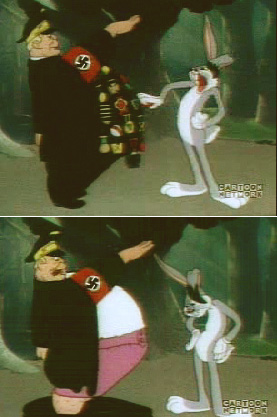If
you squint your eyes long and hard enough, any fictional character on
any animated cartoon begins to develop its own offensive, socially
improper qualities. Even the dynamics inherent to seemingly innocent cartoon
settings and situations can appear sinister when scrutinized by qualified
armchair cynics.
Belgian cartoonist Pierre "Peyo" Culliford's Smurfs,
for instance, copyright 1958. Two hundred tiny blue males harmonizing
amongst themselves in a woodsy, European hamlet polka-dotted with mushroomy
phallus cupcakes. The setup alone might be sufficient enough cause for
concern - but the fact that there's only one female to pass around?
That can't be right. Never mind the fact that Peyo also wrote and
drew a short-lived comic called "Poussy".
And hey now, what about Inspector Gadget's bulbous, nodular profile?
Doesn't that lead some people to believe he's ten times the Jew SpongeBob's
Squidward Tentacles ever was? Even though we all know in our heart of
hearts that Mr. Krabs is in fact Bikini Bottom's primary penny pincher?
Between 1928 and 1950, America's premiere animators across the Walt Disney Corporation, Warner Bros., Metro-Goldwyn-Mayer, Merrie Melodies,
Looney Tunes and R.K.O. Radio Pictures painstakingly assembled brilliant
and offensive animated vignettes requiring no undue stretchery
of the imagination. Hundreds of reels, thousands of cartoons, millions
of individual frames sketched and watercolored by hand - and more often
than people care to admit, content which directly ridiculed the behavior
and appearance of blacks, homosexuals, southerners, the mentally ill,
Arabs, Candians, Eskimos, Italians, Hispanics, Asians, Jews, Germans,
Russians, Australians, Indians, the Scottish, the French, the Irish -
and yes, even Martians.
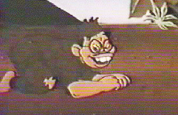This
was the golden age of animation, after all. Illustrators and comedy engineers
were only too delighted to inject healthy doses of social tension
into the public meme. Colorful, extended virtuoso sequences were married
to Carl Stalling's sprawling, frenetic musical score and Mel Blanc's hyper-enthusiastic
vocal characterizations. Together, this massive ensemble yielded some
of the most respected entertainment products our planet has ever produced.
The sheer output, the quantity alone staggers the imagination.
These were people working in an exploding new field, individuals genuinely
married to their work.
In the early days, cartoons were screened before feature films at fancy
schmancy "moving picture" theaters - often social engagements
where men and women were inspired to wear their Sunday best. Later, these
same cartoons would cycle endlessly for decades on broadcast TV or cable
syndication courtesy of modern inventions like the tel-o-vision.
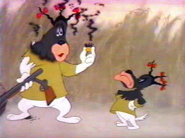And
later still - after the innovation of the video cassette recorder - these
priceless artifacts would be made available for home rental, so future
generations (and their children, and their children's children) could
bear witness to each and every blessed key frame.
Actually, no. Sorry. As the result of objections by parents, overly sensitive
sponsors, timid corporate policy, and "changing" cultural niceties,
a substantial portion of these classic cartoons has been lost forever,
and some may never again see the light of day.
Animated features with even the slightest reference to alcohol (including
rum cake), adultery, breasts, chewing tobacco, cross-dressing, gambling,
marijuana, pornography, profanity, "rim jobs" (i.e. dogs licking
each other), vaguely sexual or flirtatious situations, recreational sex
toys (i.e. Tom from Tom and Jerry sticks a vacuum cleaner up Mammy
Two-Shoes' skirt, producing giggles), smoking of any kind, suicides (i.e.
a flusterated Daffy Duck blows his beak around in circles with a shotgun)
- and even baby ducklings emerging from their shells in demure
strip tease were deemed unacceptable. What's left to laugh at? Dora
the Explorer? Rotten Dot Com is confident it speaks for all of us
when we say screw that edumacational bullshit.
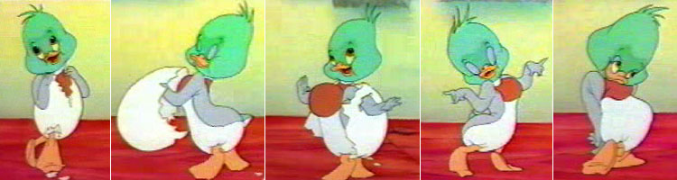
Chow Hound (1951) directed by Charles M. Jones was a real classic
- the story of a muscular dog who exploits a cat and mouse, concluding
with a vicious turn of the tables: the dog is planted belly-up on a countertop
and force-fed gallons of gravy ("...And don't forget the gravy!")
through a garden hose. Well, consider those childhood memories stricken
from the record. These days it falls under the category of imitatable
behavior, i.e. too masochistic for children and families with pets.
Merrie Melodies chose to portray Australia as a desolate, sparsely-treed
landscape populated by bouncing kangaroos and portly aborigines who communicate
with one another by chucking boomerangs or screaming UNGA BUNGA BUNGA.
That's what critics had the good sense to label an unflattering portrayal,
and it too was yanked from public shelves.
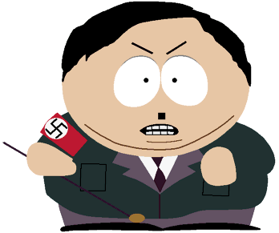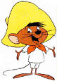And
pardoné moi, but has anyone heard from Speedy Gonzales
lately? The Mexican rat? Yipa yipa, andele arriba? Nor have we.
The Cartoon Network, which since 1999 has been the only television venue
for vintage Looney Tunes, removed the Hispanic heretic from their day
and nighttime schedules. Perhaps executives forgot Speedy actually won
an Academy Award in 1955. Phone calls to Speedy's dimwitted cousin Slowpoke
Rodriguez (the world's slowest mouse) went unanswered.
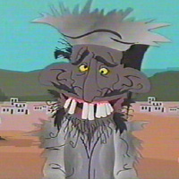Today,
the most popular racial phobery (and war-inspired propaganda) has a new
impetus: South Park, with its remarkable and timely depictions
of both Saddam Hussein and Osama bin Laden. Swiping cultural cues from
featurettes pioneered by Disney and Warner Bros., South Park manages
to massage attitudes and manipulate the American agenda by unleashing
brilliant leaflet campaigns of its own design.
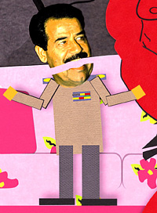
Osama is illustrated wearing "farty pants," mincing and prancing
about the stage like a young gazelle. Saddam is portrayed as- well, quite
frankly a goddamn little faggot who refuses to keep his pants on. His
voice is squeaky and ridiculous. His head flaps up and down like Canada's
own Terence and Phillip. In South Park: Bigger, Longer and Uncut,
Mr. Hussein is observed wiggling an oversized jelly dong in Satan's face.
When the film is fired up in a crowded movie house, there's no other word
apart from refreshing when one observes how many people are actually
sitting back and laughing like they're supposed to. It's a harmless cartoon
after all. Primitive, faraway lands where bronze-toned townspeople
have towels for top hats and cloth diapers for dungarees? Now that's just
ridiculous! We'll be right back after these messages from 1961.
Hey Fred - how about a Winston break? Winston's the one filtered cigarette
that delivers flavor twenty times a pack. Filtered blend makes the big taste
difference - and only Winston has it! 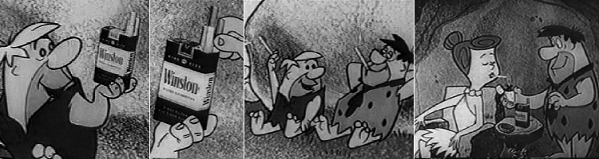
Yeah, Barn - up front where it counts, in front of the pure white filter.
Winston packs rich tobaccos specially selected and specially processed for
good flavor and filtered smoking. Winston tastes good... like a cigarette
should!
The list goes on and on. Coal Black and De Sebben Dwarves.
Goldilocks and the Jivin' Bears. Ownership of Warner Bros. cartoons
passed through United Artists in 1968. They created a "Censored 11"
list of cartoons they'd refuse to air or make available for purchase on
any media. When Time-Warner bought Turner Broadcasting in 1996, Cartoon
Network turned over the Bugs Bunny rights to Warner Bros, and later sparred
with them over an existing promise to sell material to 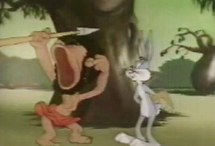Viacom's
Nickelodeon and Walt Disney's ABC.
See, every June is June Bugs month at Cartoon Network, and it's
a veritable Bugs Bunny marathon. Fearful of a potential backlash, AOL
Time-Warner very nearly dropped a major anvil on Cartoon Network's proposed
festival in 2001. Racially charged episodes were aired out of order, late
at night with the following disclaimer:
"Cartoon Network does not
endorse the use of racial slurs. These vintage cartoons are presented
as representative of the time in which they were created and are presented
for their historical value."
Historical value? Rock on. Which is Witch features Bugs Bunny
in a classic Looney Tunes sequence of spear-chuckling, junglebunny slapstick.
Broad-lipped, chocolate skinned natives populate a cannibalistic aborigine
island of pure whimsy - and it would seem the young master Bugs is keen
to participate! His first priority: blend in, through the ingenious
use of a tightly coiled spring and tasteful table settings.
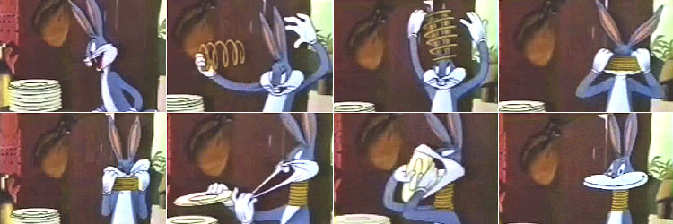
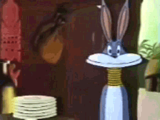WHASSUP,
doc?? Oh, that wascally wacist. How could
America's best-loved wabbit be so blacktose intolerant?
Even more hare-raising skeletons dangle at the rear of Uncle Tom's
Cabinet - another rich, tonal assault perpetranimated upon African
Americans in 1949 and a spoof of Harriet Beecher Stowe's antislavery novel.
And who could forget Bugs Bunny Nips the Nips in 1928?
"Japs!" screeches Bugs. "Hundreds of them!"
He disguises himself as an ice cream vendor and doles out grenades on
lollipop sticks. Here ya go, bowl-legs. Here's one for you, monkeyface.
Here y'are, slanty-eyes. Everybody gets one.
In All This and Rabbit Stew, Bugs beats a black hunter at dice
and wins his clothes. But it wasn't the implicit characterization of black
people as listless gamblers which critics deemed offensive, it was merely
the suggestion that black people were less intelligent than rabbits.
Meanwhile, hillbilly rednecks with bushy moustaches have yet to twist
their knickers whenever Bugs outwits Yosemite Sam.
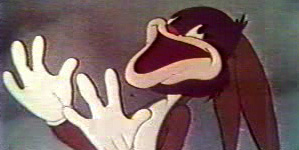When
Spike Lee made Bamboozled (a film dealing extensively with black
stereotypes in Hollywood) Warner Bros. denied his request to include images
of Bugs in blackface. But whether it's Bugs Bunny tackling key issues
of racism, or Popeye the Sailor Man binging on spinach while muttering
to himself a private chorus of "you're a sap / sap / sap / mister
Jap," or even P-p-P-Porky P-p-P-
P-p-P-pork P-p-P-p-Porky P-p--
P-p-P-p-P-p-P-p-P-p-P-p-P-p-P-p-P-p-P-
Okay, never mind. But if you think words like banned or censored
imply a degree of government intrusion which feels just a wee bit exaggeratory,
consider this. In 1942, when the U.S. Treasury Department ran a whisper
shy of funds during the war effort, they wisely sought financial counsel
from the Looney Tunes division of Merrie Melodies. In theaters from coast
to coast, Bugs Bunny showed up once again in full Al Jolson blackface,
performing a musical number meant to peddle stamps and U.S. Savings bonds.
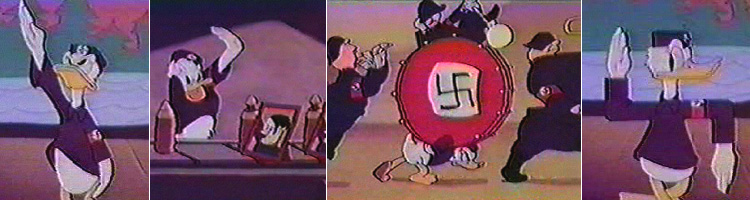
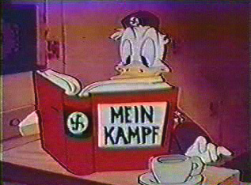The
cartoon archetype of American smart guy / foreign dumb guy is a time-honored
crucible best served during a war, and the Walt Disney Corporation concocted
a few classics as well.
The Swastika-dotted landscape of Der Fuehrer's Face (1942)
was the perfect brass band musical vehicle for Donald Duck, a Nazi munitions
worker who "alternates between screwing nose cones onto bombs and
saluting framed portraits of Adolf Hitler". The Japanese make
a cameo appearance too - and wouldn't you know it, they've got lime green
skin, big bulbous eyeglasses, Tupperware haircuts and protruding, jaggedy-ass
dentures rivaling those of Bugs Bunny.
The title song, performed by Spike Jones and his City Slickers, won an
honest-to-gosh Oscar for Best Short, beating out veteran animator
Leon Schlesinger's wheezing, preachy and pedantic Pigs in a Polka.
Other big winners that year: honkabilly big mouth James Cagney for Best
Actor in Yankee Doodle Dandy and Irving Berlin, who penned the
music and libretto for White Christmas.
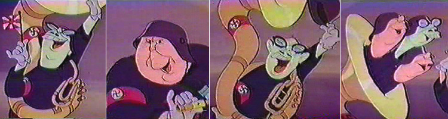
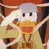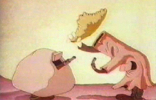Donald
T. Duck would later redeem himself as an air ranger in Commando Duck,
a deftly animated farce combining traditional Disney magic with anti-Japanese
tomfoolery. The premise: he parachutes into enemy territory during World
War II. It's treacherous terrain, marked by snipers hiding inside myopic,
bucktoothed tree trunks which speak in pigeon-toed English, alternately
bowing respectfurry toward one another and offering endress aporogies.
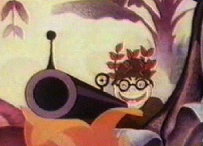A-prease
and a-thank you! Time to shooting now prease I hope! Japanese custom say
always to shooting a man in the back prease! Ah so! Ah so!
And so on. Donald's target coordinates on his map are F-8. Fate,
get it?
Donald's mission: contact the enemy, surround them single-handedly, and
wash them out. After a series of slaphappy bumbling mishaps, he manages
to direct an avalanche of tumbling boulders down a gushing waterfall toward
a Japanese military facility. The airfield is flooded. Hundreds of Nipponese
soldiers drown, and dozens of red-spotted planes hang like limp turkeys
from dead, drooping trees. Sad, squawky trumpets wup-wahh
across the horizon. But not in a hate crimey kinda way! This comical
vignette, for all intents and purposes, eagerly delivers the very quintessence
of merriment.
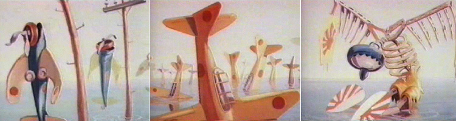
Witnessing the devastation, Donald quacks to himself with smug, self-satisfied
laughter and pens a note to his superiors: "Enemy washed out."
Fifty years later, in 1992, Disney would get busy irking the Arab-American
community with sharp lyrics from Aladdin, "where they cut
off your ear / if they don't like your face. It's barbaric / but hey /
it's home."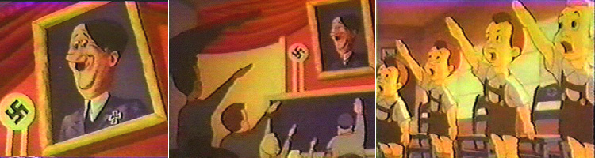
But topping the eye-poppingly outrageous charts of
historical cartoon propaganda is without a doubt Disney's regrettable
vignette, Education For Death, which graphically details
the life and times of Hitler youth. The narrator solemnly intones
the distorted text of Gregor Ziemer's The Making of The Nazi.
German adults are portrayed in classic Disney "sinister bulldog"
style: barrel chest, small rear end, bowed legs, and no neck. The
bellowing, red-faced instructor's jowls flop around like coattails
as he berates a kindergarten classroom full of Bambi-eyed waifs
in lederhosen, whose pluckish heads are delightfully oversized.
The military professor's singular goal: get these scatterbrained
kids to appreciate Hitler's way of thinking.
The lesson plan is presented at the blackboard. Chalk drawings of
a fox eating a rabbit illustrate nature's intended course: the weaker
species (i.e. Jews and bunnies) are justly but inevitably devoured
without mercy by superior forces. |
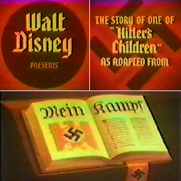 |
| 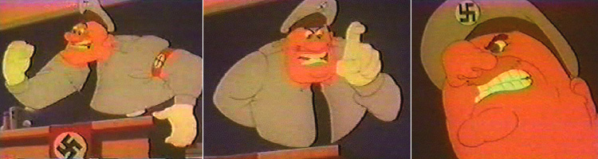 |
As Education For Death descends toward its bloody climax, the
animation is bathed in murky red tones. The viewer is urged to "listen
closely to the fanatic cry" of the German people. What follows is
a pounding orchestral soundtrack and a relentless montage punctuating
all things fire and brimstone.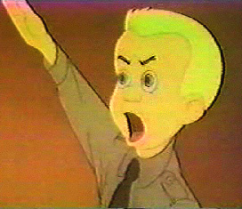
Classic hardbound volumes of literature and philosophy are piled high,
fanned at the spine and set ablaze. Flaming torches cast violent, flickering
shadows as the Holy Bible morphs into a limited first-edition Mein
Kampf. Crucifixes hung by the chimney with care are zapped by swift
arcs of lightening from the heavens, and transformed into unfurling Swastikian
flags or bladed Iron Crosses.
Delicate, stained glass church windows are smashed out during drunken
antisemetic protests - and endless squadrons of squat, pear-shaped children
in silhouette are seen goosestepping in grids for miles across the globe,
arms outstretched toward the sky as they Heil Hitler over and over.
Today Germany - tomorrow the world!
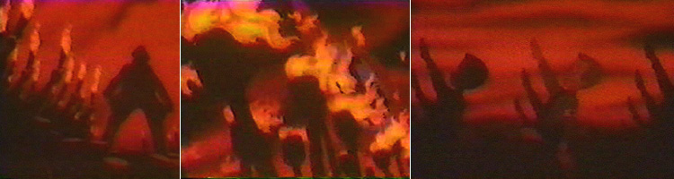
Nine times out of ten, a person won't even notice racist or hateful overtones
in a cartoon unless the idea is planted firmly in head. By refusing to unearth
and revive historical artifacts, societies sustain immeasurably more damage
than brief exposure to racial toxins from old-timey cartoon doodles. Novelist
Kurt Andersen (Turn of the Century, 1999) muses, "If we don't
know our history in all of its complicated detail, how are we supposed to
understand the present?"
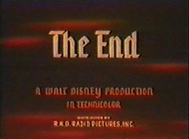
To allow ourselves only a bland, repackaged version of the past is - how
do you say - kind of a Mickey Mouse approach.
"Marching and heiling, heiling and marching. In him is planted
no seed of laughter, hope, tolerance or mercy. For him - only heiling
and marching, marching and heiling. The grim years of regimentation have
done their work. Now he's a good Nazi. He sees no more than the
party wants him to. He says nothing but what the party wants him to say.
And he does nothing than what the party wants him to do. And so he marches,
with millions of comrades, trampling on the rights of others. For now,
his education is complete. His education... for death."
|